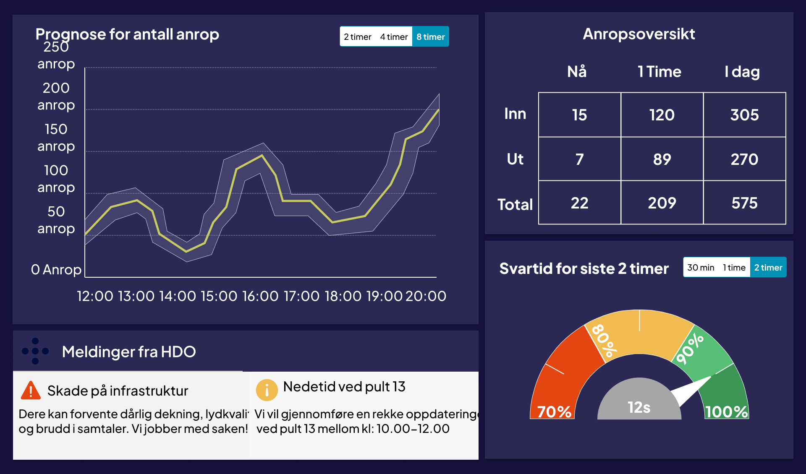
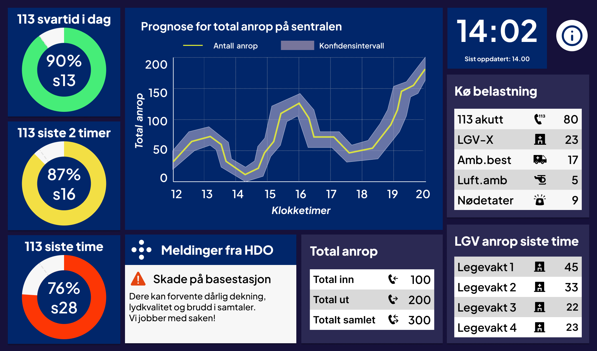
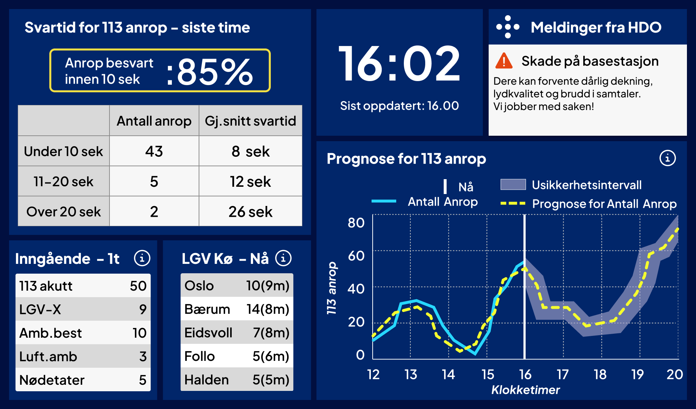

Bachelorprosjekt
Gruppemedlemmer: Hanna Samborska og Fredrik Johan Eide
Om prosjektet
Bacheloroppgaven ble utviklet i samarbeid med HDO (Helsetjenestens driftsorganisasjon for nødnett) og problemstillingen handler om hvordan et sanntidsdashboard kan forbedre ressursstyring og situasjonsbevissthet for operatører ved AMK-sentraler.
Gruppen gjorde først et grundig innsiktsarbeid, som gikk ut på å intervjue reelle brukere, være med på feltstudier og sende ut en liten spørreundersøkelse. Vi bearbeidet arbeidet og itererte på designet. Vi fikk også tilbakemeldinger fra brukerne om hva de syntes om designet så langt, og vi gjorde endringer basert på tilbakemeldingene.
Skjermbilder



Teknologier
-
Next.js
-
TypeScript
-
Python
-
Figma
Refleksjoner
Refleksjon
Jeg syntes det var interessant å prøve å få hi-fi prototypen til å ligne den endelige mid-fi prototypen
Det vanskeligste med prosjektet var å koble dashboardet opp til eksempeldataen i backenden, men jeg fikk det til slutt til.